Windows¶
Work with the Windows¶
Close/Open Windows¶
You can close/open windows from the View menu.
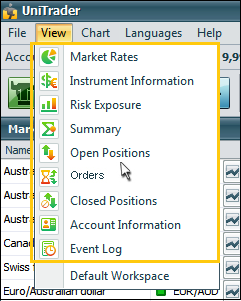Hide/Show Windows¶
You can hide/show windows by pressing the tabs button in the window.
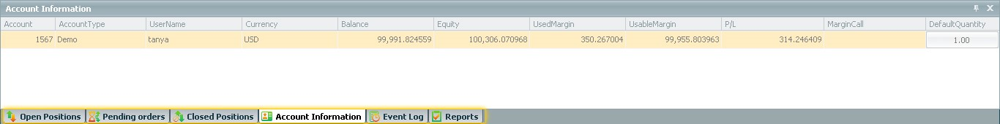You also can hide/show or attach windows to the border with the option - Window Pin.
Drag & Drop¶
You can Drag & Drop your selected windows according to your personal preference.
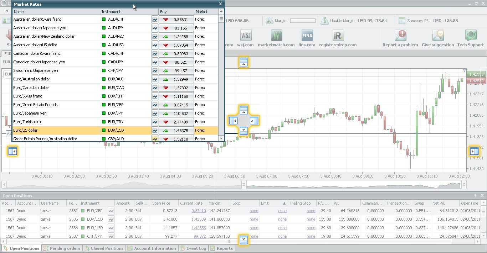Double-click on the title of the window returns it to the starting position.
Set the Default Workspace¶
If you want to reset the Workspace to default and allow all windows to return to the starting position when UniTrader was first installed, please click on “View” and then “Default Workspace”.
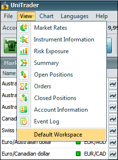Edit columns of the window¶
You can change the order of the columns by Drag & Drop them. You also can delete some columns from the table. Just Drag & Drop it over the borders of the window.
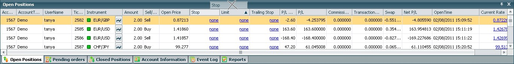To return these columns right-click on the titles of the table and choose “Columns”.
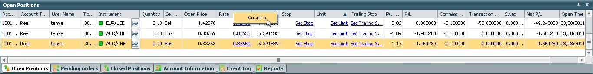Then choose wanted columns and press “Ok”.
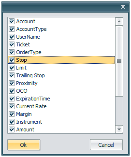The chosen columns will return into the table.
Account Information Panel¶
The Information Panel displays current information regarding the usage of your funds for a defined account (or accounts).
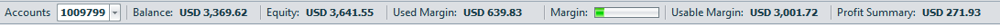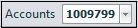 Accounts – Displays the account which is currently logged in on the platform.
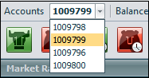 If you have multiple accounts you can open the drop-down list next to accounts and choose the account you want to view.
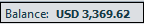 Balance – Displays the balance in your trading account.
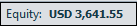 Equity – Displays the balance taking into account profit and loss on all open positions.
Calculation: Equity = Balance + Summary P/L.
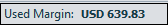 Used Margin – The amount of money in your account that is currently used to keep positions open.
Calculation: Used Margin = ∑(open positions) Margin.
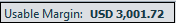 Usable Margin – The amount that is currently available to open new positions; note that if you are gaining or losing on an open positions, the amount of usable margin will differ accordingly;
Calculation: Usable Margin = Equity – Used Margin = Balance + Profit Summary – Used Margin.
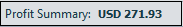 Profit Summary – The P/L of all open positions;
Calculation: Profit Summary = ∑(open positions) P/L.
Trading Panel¶
Event Log Window¶
Account Information Window¶
Closed Positions Window¶
Pending Orders Window¶
Open Positions Window¶
Summary Window¶
Risk Exposure Window¶
Instrument Information Window¶
Market Rates Window¶
This window displays all the current rates for selling (Sell) or buying (Buy) the subscribed instrument.
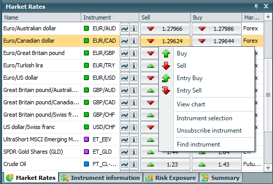Table Columns:
Name – Full name of the instrument.
Instrument – The trading symbol. The base currency will come first, followed by the quoted currency.
Sell – The current rate for selling (at the bid). The green arrows show up ticks, and the red arrows show down ticks. You can sell by clicking on the bid price.
Buy - The current rate for buying (ask). The green arrows show up ticks, and the red arrows shows down ticks. You may buy by clicking on the ask price.
Market – The type of instrument listed (Forex, CFD etc).
Market Operations¶
Create Order¶
To «Create Order» you can click on the 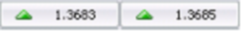 buttons or select “Sell” or “Buy” from the popup menu (right-click on an instrument).
Create Entry Order¶
To create «Entry Order» you can right-click on the instrument and select “Entry Sell” or “Entry Buy” from pop-up menu.